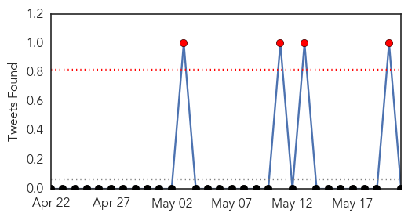

30 Day Trends
Web: 2 alerts, 0 warnings
Twitter: 4 alerts, 0 warnings
Top Articles:
- 0.999
- Bahrain launches investigation into new Mers threat
- 0.999
- S. Korea confirms third case of MERS virus; 64 isolated
- 0.999
- Gulf Daily News Local News New Mers threat
- 0.999
- South Korea confirms third case of MERS virus; 64 isolated
- 0.999
- MERS primer: what you need to know
- 0.999
- UPDATE 3-South Korea confirms third case of MERS virus; 64 isolated
- 0.998
- South Korea confirms third case of MERS virus; 64 isolated
- 0.998
- South Korea confirms third case of MERS virus; 64 isolated
- 0.998
- South Korea confirms third case of Mers virus; 64 people isolated, East Asia News & Top Stories
- 0.998
- South Korea confirms third case of Mers virus; 64 people isolated, East Asia News & Top Stories
- 0.998
- South Korea confirms three cases of Mers virus; places 64 others in isolation
- 0.998
- MERS Virus case reported in South Korea
- 0.998
- DH closely monitors first two MERS cases in Korea
- 0.997
- Second case of MERS confirmed in S. Korea, third case possible
- 0.996
- Abu Dhabi health authorities confirm second Mers case
- 0.996
- MERS cases grow in South Korea: 3 confirmed to date, 64 contacts isolated
- 0.995
- More MERS cases in South Korea, Qatar, Saudi Arabia
- 0.995
- S Korea confirms third case of MERS; 64 isolated
- 0.994
- The Chosun Ilbo (English Edition): Daily News from Korea
- 0.993
- SCH reports new case of Mers coronavirus
- 0.992
- Abu Dhabi announces two new MERS cases
- 0.991
- South Korea confirms second case of MERS virus; third case possible
- 0.987
- Mers probe initial results announced
- 0.981
- South Korea confirms second case of MERS virus; third case possible, Others news, Health News, AsiaOne YourHealth
Top Tweets:
-
No tweets found for May 21, 2015
Web/News Articles

Tweets
Article Locations

Article Confidences